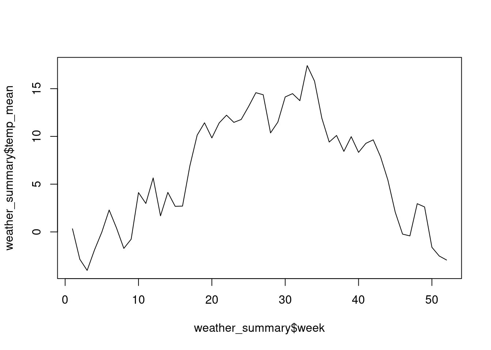
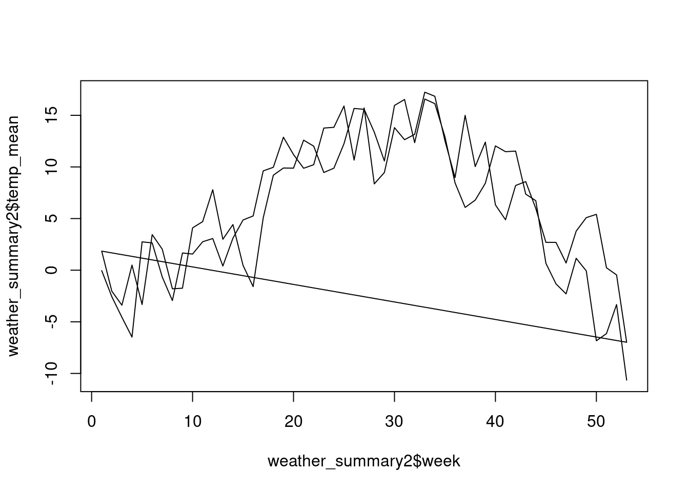
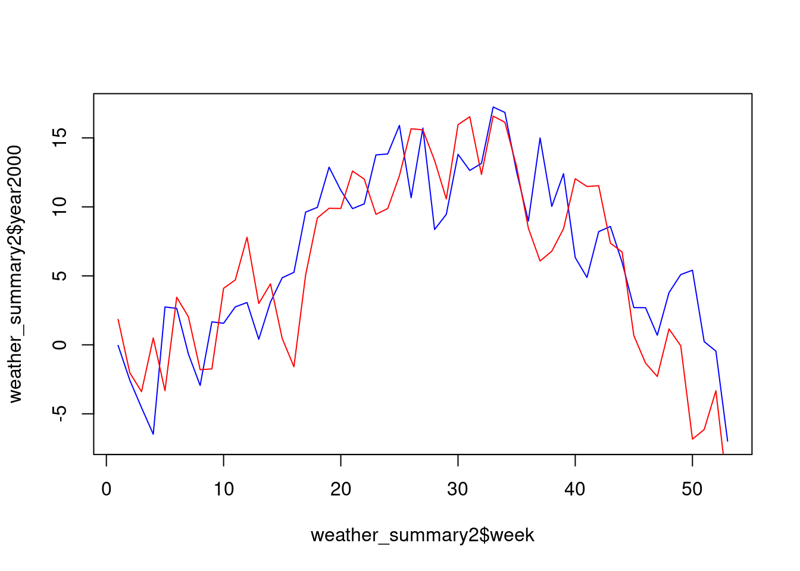

Prepro 3: Übung
Aufgabe 1
Gegeben sei ein Datensatz “sensors_combined.csv”, mit den Temperaturwerten von drei verschiedenen Sensoren. Lade diesen Datensatz herunter, importiere ihn als csv in R (als sensors_combined).
Formatiere die Datetime Spalte in POSIXct um. Verwende dazu die Funktion as.POSIXct (lies mit ?strftime() nochmal nach wie du das spezfische Format (die “Schablone”) festlegen kannst.
library(readr)
sensors_combined <- read_csv(here("data","sensors_combined.csv"))
sensors_combined$Datetime <- as.POSIXct(sensors_combined$Datetime, format = "%d%m%Y_%H%M")Aufgabe 2
Überführe die Tabelle in ein langes Format (verwende dazu die Funktion pivot_longer aus tidyr) und speichere den output als sensors_long.
Tipp:
- im Argument
colskannst du entweder die Spalten auflisten, die “pivotiert” werden sollen. - Alternativ kannst du (mit vorangestelltem Minuszeichen,
-) die Spalte, bezeichnen, die nicht pivotiert werden soll. - In beiden Fällen musst du die Spalten weder mit Anführungs- und Schlusszeichen noch mit dem
$-Zeichen versehen.
library(tidyr)
# Variante 1 (Spalten abwählen)
sensors_long <- pivot_longer(sensors_combined, -Datetime)
# Variante 2 (Spalten anwählen)
sensors_long <- pivot_longer(sensors_combined, c(sensor1:sensor3))Aufgabe 3
Gruppiere sensors_long nach der neuen Spalte wo die Sensor-Information enthalten ist (default: name) mit group_by und berechne die mittlere Temperatur pro Sensor (summarise). Hinweis: Beide Funktionen sind Teil des Packages dplyr.
Der Output sieht folgendermassen aus:
library(dplyr)
sensors_long %>%
group_by(name) %>%
summarise(temp_mean = mean(value, na.rm = TRUE))# A tibble: 3 × 2
name temp_mean
<chr> <dbl>
1 sensor1 14.7
2 sensor2 12.0
3 sensor3 14.4Aufgabe 4
Erstelle für sensors_long eine neue convenience Variabel month welche den Monat beinhaltet (Tipp: verwende dazu die Funktion month aus lubridate). Gruppiere nun nach month und Sensor und berechne die mittlere Temperatur.
library(lubridate)
sensors_long %>%
mutate(month = month(Datetime)) %>%
group_by(month, name) %>%
summarise(temp_mean = mean(value, na.rm = TRUE))# A tibble: 6 × 3
# Groups: month [2]
month name temp_mean
<dbl> <chr> <dbl>
1 10 sensor1 14.7
2 10 sensor2 12.7
3 10 sensor3 14.4
4 11 sensor1 NaN
5 11 sensor2 8.87
6 11 sensor3 NaN Aufgabe 5
Lade jetzt nochmal den Datensatz wetter.csv (Quelle MeteoSchweiz) herunter und importiere ihn als CSV mit den Korrekten Spaltentypen (stn als factor, time als POSIXct, tre200h0 als double).
weather <- read_csv(here("data","weather.csv"), col_types = cols(col_factor(), col_datetime("%Y%m%d%H"), col_double()))Aufgabe 6
Erstelle nun eine convenience Variabel für die Kalenderwoche pro Messung (lubridate::isoweek). Berechne im Anschluss den mittleren Temperaturwert pro Kalenderwoche.
weather_summary <- weather %>%
mutate(week = isoweek(time)) %>%
group_by(week) %>%
summarise(
temp_mean = mean(tre200h0, na.rm = TRUE)
)Visualisiere im Anschluss das Resultat:
plot(weather_summary$week, weather_summary$temp_mean, type = "l")
Aufgabe 7
In der vorherigen Aufgabe haben wir die mittlere Temperatur pro Kalenderwoche über alle Jahre (2000 und 2001) berechnet. Wenn wir die Jahre aber miteinander vergleichen wollen, müssen wir das Jahr als zusätzliche convenience Variabel erstellen und danach gruppieren. Versuche dies mit den Wetterdaten und visualisiere den Output anschliessend.
weather_summary2 <- weather %>%
mutate(
week = week(time),
year = year(time)
) %>%
group_by(year, week) %>%
summarise(
temp_mean = mean(tre200h0, na.rm = TRUE)
)`summarise()` has grouped output by 'year'. You can override using the
`.groups` argument.plot(weather_summary2$week, weather_summary2$temp_mean, type = "l")
Aufgabe 8
Überführe den Output aus der letzten Übung in eine wide table. Nun lassen sich die beiden Jahre viel besser miteinander vergleichen.
weather_summary2 <- weather_summary2 %>%
pivot_wider(names_from = year, values_from = temp_mean,names_prefix = "year")plot(weather_summary2$week, weather_summary2$year2000, type = "l",col = "blue")
lines(weather_summary2$week, weather_summary2$year2001, type = "l",col = "red")